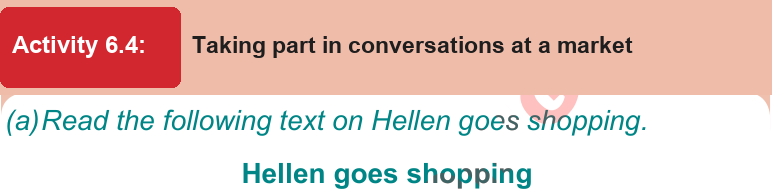
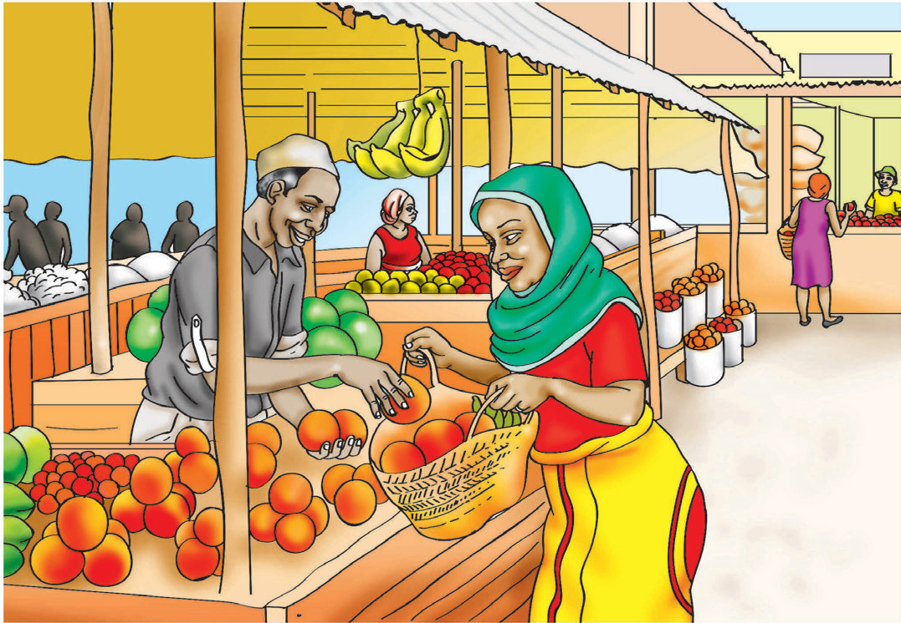

Questions
- 1. Why did Oddo go to hospital?
- 2. Which hospital did Oddo go to?
- 3. How was Oddo feeling?
- 4. What could be the cause of Oddo’s problems according to the doctor?
- 5. What tests did the doctor advise Oddo to take?

Activity 6.4: Taking part in conversations at a market by talking/signing
(a) Read the following text on Hellen goes shopping.
Hellen goes shopping
Hellen is twenty-four years old. One day, her home ran out of foodstuffs. She decided to go shopping for foodstuff in the market. In the market, she went to Juma’s stall. The following was the conversation between Hellen and Juma. Read aloud/sign their conversation.

Juma:
Hello! Can I help you?
Hellen:
Yes, I would like to buy some onions, please.
Juma:
How many kilograms?
Hellen:
Two kilograms.